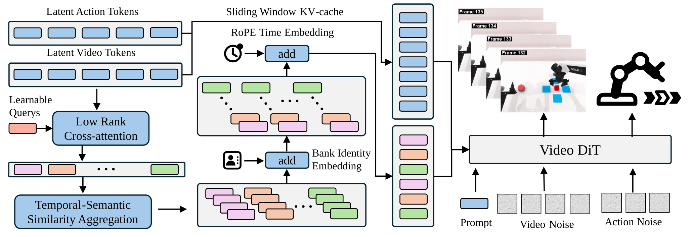
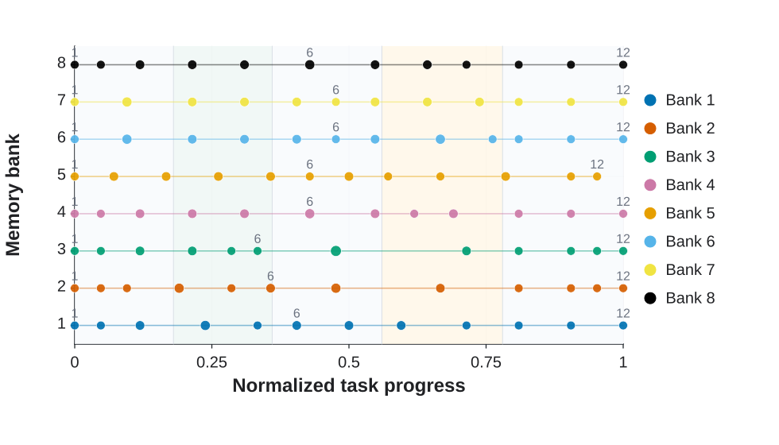
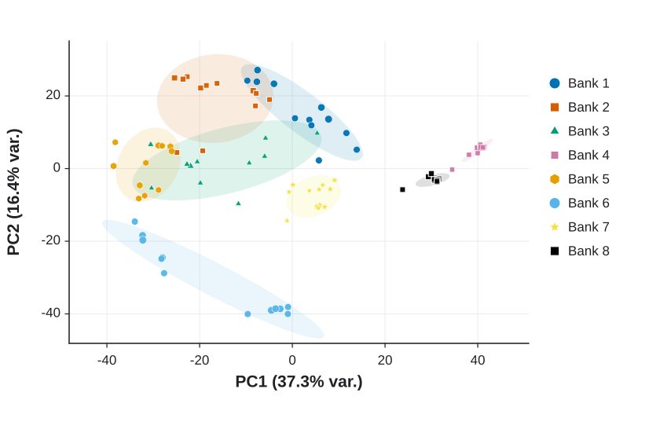

Multi-scale temporal context
Local history and short-term future prediction handle immediate control, while long-term memory preserves cross-stage events that have left the sliding window.
1 CASIA
2 Yinwang Intelligent Technology
3 FiveAges
* Corresponding authors

Abstract
DiM-WAM is a memory-augmented world-action model that organizes diverse historical events, local future dynamics, and global task progress for long-horizon robot manipulation.
World-action models jointly predict future visual states and actions, but short local windows are insufficient when correct behavior depends on earlier observations and task progress. DiM-WAM augments a base WAM with diverse historical event memory: it extracts compact visual events from real observations, updates multiple memory banks through independent similarity-based merging, and reads bank-identity- and time-embedded long-term context to condition video and action denoising. A progress-supervision objective encourages memory tokens to encode completed events, the current task stage, and implications for the remaining task. On RMBench, DiM-WAM raises average success from 28.4% with LingBot-VA to 69.8%, exceeding Mem-0 at 42.0%. On four real-world Franka tasks, it improves average stage success from 70.7% to 91.5% and full-task success from 52.5% to 80.0%.
Framework

Local history and short-term future prediction handle immediate control, while long-term memory preserves cross-stage events that have left the sliding window.
Independent similarity-based compression lets parallel banks keep complementary historical evidence under a fixed token budget.
A task-progress objective encourages memory tokens to encode both completed events and the current goal-relative stage.
Simulation Experiments
RMBench evaluates long-horizon non-Markovian manipulation tasks where local observations can become ambiguous after key historical evidence leaves the context window.
LingBot-VA baseline: 28.4%; Mem-0 explicit-memory baseline: 42.0%.
Improves over LingBot-VA at 22.8% and Mem-0 at 52.8%.
Improves over LingBot-VA at 35.5% and Mem-0 at 28.5%.
| Task | TMC | DP | ACT | pi0.5 | X-VLA | Mem-0 | LingBot-VA† | DiM-WAM† |
|---|---|---|---|---|---|---|---|---|
| Observe and Pick Up | M(1) | 1.0 | 1.0 | 9.0 | 9.0 | 4.0 | 4.0 | 13.0 |
| Rearrange Blocks | M(1) | 0.0 | 29.0 | 13.0 | 13.0 | 89.0 | 27.0 | 99.0 |
| Put Back Block | M(1) | 0.0 | 0.0 | 11.0 | 18.0 | 90.0 | 24.0 | 98.0 |
| Swap Blocks | M(1) | 11.0 | 2.0 | 24.0 | 16.0 | 67.0 | 34.0 | 96.0 |
| Swap T | M(1) | 20.0 | 2.0 | 15.0 | 3.0 | 14.0 | 25.0 | 97.0 |
| Average | M(1) | 6.4 | 6.8 | 14.4 | 11.8 | 52.8 | 22.8 | 80.6 |
| Battery Try | M(n) | 10.0 | 19.0 | 16.0 | 26.0 | 28.0 | 33.0 | 48.0 |
| Blocks Ranking Try | M(n) | 10.0 | 0.0 | 6.0 | 1.0 | 18.0 | 48.0 | 87.0 |
| Cover Blocks | M(n) | 0.0 | 0.0 | 0.0 | 2.0 | 68.0 | 42.0 | 56.0 |
| Press Button | M(n) | 0.0 | 0.0 | 0.0 | 0.0 | 0.0 | 19.0 | 34.0 |
| Average | M(n) | 5.0 | 4.8 | 5.5 | 7.3 | 28.5 | 35.5 | 56.3 |
| Total Average | - | 5.8 | 5.9 | 10.4 | 9.8 | 42.0 | 28.4 | 69.8 |
Real-World Experiments
Four long-horizon Franka Panda tasks evaluate whether memory can preserve target identity, spatial state, and event order across multiple real-world stages.
Improves over LingBot-VA at 70.7% across four Franka tasks.
Preserves target identity, spatial state, and event order across stages.
| Method | Find Blue Block | Line Swap | Triangle Swap | Press Twice | Avg. | |||||
|---|---|---|---|---|---|---|---|---|---|---|
| SSR | SR | SSR | SR | SSR | SR | SSR | SR | SSR | SR | |
| pi0.5 | 0.0 | 0.0 | 5.0 | 0.0 | 0.0 | 0.0 | 0.0 | 0.0 | 1.3 | 0.0 |
| Fast-WAM | 0.0 | 0.0 | 0.0 | 0.0 | 0.0 | 0.0 | 0.0 | 0.0 | 0.0 | 0.0 |
| LingBot-VA | 52.5 | 10.0 | 78.4 | 60.0 | 51.8 | 40.0 | 100.0 | 100.0 | 70.7 | 52.5 |
| DiM-WAM | 92.5 | 70.0 | 95.0 | 90.0 | 78.4 | 60.0 | 100.0 | 100.0 | 91.5 | 80.0 |
Rows are the four Franka tasks and columns are the evaluated methods.
Memory Analysis
The retained events and token-space structure show how different banks preserve complementary historical evidence during one complete episode.

